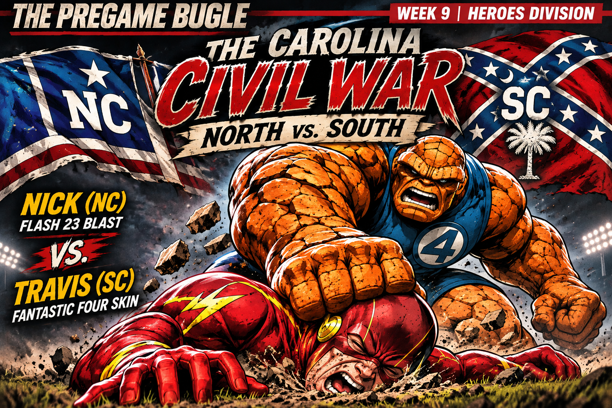

AVENGERS PREGAME DECLARES ITS SECOND OFFICIAL RIVALRY
The Carolinas are officially at war.
Not over territory or resources. This time, it's over something significantly more embarrassing: two grown men who think they're qualified to manage fantasy football teams.
Following the legendary Short Bus Showdown between Jake and Aaron, Avengers Pregame proudly introduces its second official rivalry: THE CAROLINA CIVIL WAR.
Representing North Carolina is General Nick, commander of Flash 23 Blast, Indianapolis Colts fan, and a man whose ego somehow managed to go undefeated longer than his actual fantasy team.
Representing South Carolina is General Travis, commander of Fantastic Four Skin, Tennessee Titans fan, and living proof that watching football every Sunday doesn't mean you understand a goddamn thing about it.
And because apparently God has a sense of humor, these two idiots also support AFC South rivals.
The North has the arrogance. The South has the artillery. Neither side has a general qualified to operate a fucking microwave.
THE NORTH: GENERAL NICK'S SIX-WEEK FIELD TRIP
Nick started 6–0, and this goddamn genius genuinely thought he was building a dynasty.
What he conveniently forgot to mention was that his first six games came against a schedule specifically designed for a third-row-seat window licker.
This motherfucker was celebrating every victory like he'd just conquered Europe.
Nick's schedule was so fucking easy I almost opened an investigation into whether Sleeper thought he was a Make-A-Wish kid.
Nick spent six weeks thinking he was General Patton. Then the schedule got difficult, and suddenly the North was being commanded by a guy who looks like he needs help opening a Lunchable.
When this goddamn genius wasn't busy chewing on crayons, he was sitting in his high chair being spoon-fed victories while the rest of the league was actually playing competitive football.
Then somebody took away the bib, stopped making airplane noises, and put actual contenders in front of him.
Now Nick is looking extra special.
To be fair, Nick isn't completely defenseless. He's assembled legitimate running back depth with Chase Brown, Kenneth Walker III, and James Cook, and his roster has enough weapons to make him dangerous.
The problem is that his early record convinced him he was invincible.
Nick is the Jacksonville Jaguars of Avengers Pregame.
A few wins against questionable competition and suddenly everybody starts talking about a championship. Then the real contenders show up and remind us why Jacksonville doesn't get nice things.
Turns out Nick wasn't building a dynasty. He was playing Madden on Rookie difficulty with the second controller unplugged.
THE SOUTH: GENERAL TRAVIS AND THE MANAGEMENT INVESTIGATION
Travis has Bijan Robinson and Derrick Henry and still can't put together a respectable record.
That's not a roster problem. That's a goddamn management investigation.
Seriously, how the fuck do you have those two running backs and still struggle?
Bijan Robinson and Derrick Henry are out there putting their bodies through a meat grinder every Sunday just so Travis can look at the scoreboard Monday night and go:
"Damn, what happened?"
PRIMETIME TRAV HAPPENED.
The man has assembled an impressive collection of fantasy football talent and somehow turned setting a starting lineup into a weekly hostage situation.
And then there's his primetime Pick'em performance.
Every Thursday and Monday, Travis makes his selection with the confidence of somebody who just spent three hours studying game film.
Then kickoff arrives, and we discover the film he was studying was apparently fucking Finding Nemo.
The Tennessee Titans have spent years teaching Travis how to lose on Sundays. Apparently, he's decided to turn that into an entire fantasy football coaching philosophy.
And the worst part?
Travis actually has a dangerous fucking team.
Drake Maye, Bijan Robinson, Derrick Henry, George Pickens, Jameson Williams, and Rashee Rice give the South enough firepower to destroy just about anybody when things go right.
Which brings us to the greatest mystery in Avengers Pregame.
How does a man acquire this much talent and still manage to be the biggest obstacle standing between his team and a championship?
Simple.
Travis is the Jerry Jones of Avengers Pregame.
He assembles a championship roster, convinces everybody this is finally his year, then watches the entire operation turn into a nationally televised fucking disaster.
The only difference is Jerry Jones has the decency to watch his failures from a luxury suite.
At this point, Bijan and Henry should be demanding a trade, a new head coach, and a congressional investigation.
Unfortunately, Travis is the owner, general manager, and head coach.
There's nobody left to fire except the fucking mascot.
THE COMMISSIONER'S VERDICT
Here's what makes this rivalry so entertaining.
Travis built the better army. Nick has been the better general.
The South has more than enough firepower to win this matchup. In fact, I believe Travis has the roster capable of producing the higher optimal lineup score this week.
But fantasy football doesn't award victories for what your team could've scored.
It rewards the points you actually put in your starting lineup.
Travis has the kind of roster that should require a salary-cap investigation, yet somehow manages it like a man trying to defuse a bomb by cutting whichever wire looks the prettiest.
Nick, meanwhile, has actually figured out how to turn his roster into wins.
One man has the talent.
The other has demonstrated the ability to use his.
And somehow, between these two alleged military leaders, that's enough to determine who wins a war.
OFFICIAL COMMISSIONER'S PREDICTION
PREDICTION: NICK WINS BY 10 POINTS.
PREDICTION: TRAVIS WINS THE OPTIMAL-POINTS BATTLE.
The South should have enough firepower to win the war.
Unfortunately, General Travis will probably leave half the ammunition sitting on the fucking bench.
My prediction: The North wins. Nick immediately orders a statue of himself. Travis demands a recount, then discovers the missing points sitting on his bench.
Somewhere in Dallas, Jerry Jones watches the entire disaster and whispers:
"That's my boy."
TWO STATES. ONE DIVISION. ZERO COMPETENT GENERALS.
WILL THE NORTH WIN, OR WILL THE SOUTH RISE AGAIN?